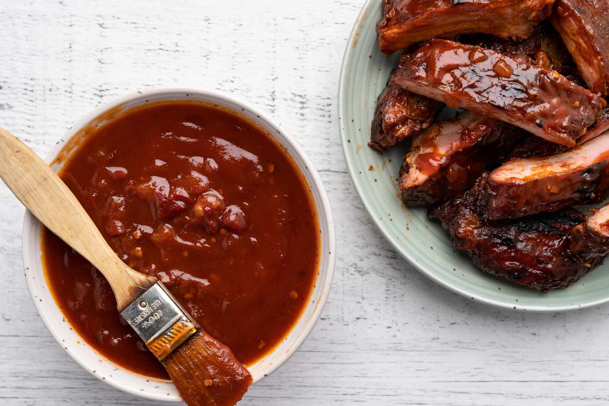

Homemade BBQ Sauce

Description
This recipe has a lot of sweetness and spice, so if you're looking for a classic homemade BBQ sauce that's easy to make, look no further.
Ingredients
- Ketchup
- Brown Sugar
- Vinegar
- Water
- Spices and Seasonings
- Hot Sauce
Steps
- Gather all ingredients.
- Combine brown sugar, ketchup, vinegar, water, and Worcestershire sauce in a blender.
- Season with mustard, paprika, salt, pepper, and hot pepper sauce. Blend until smooth.
- Enjoy!